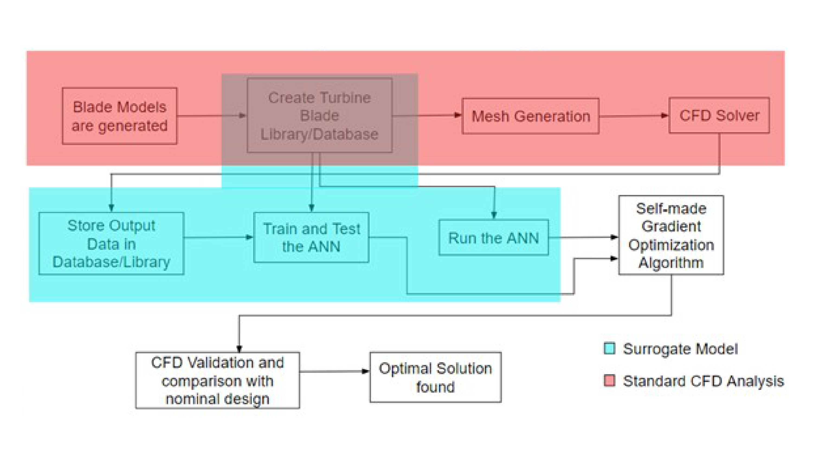
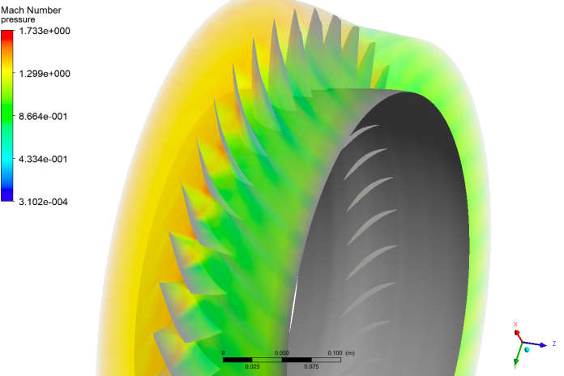
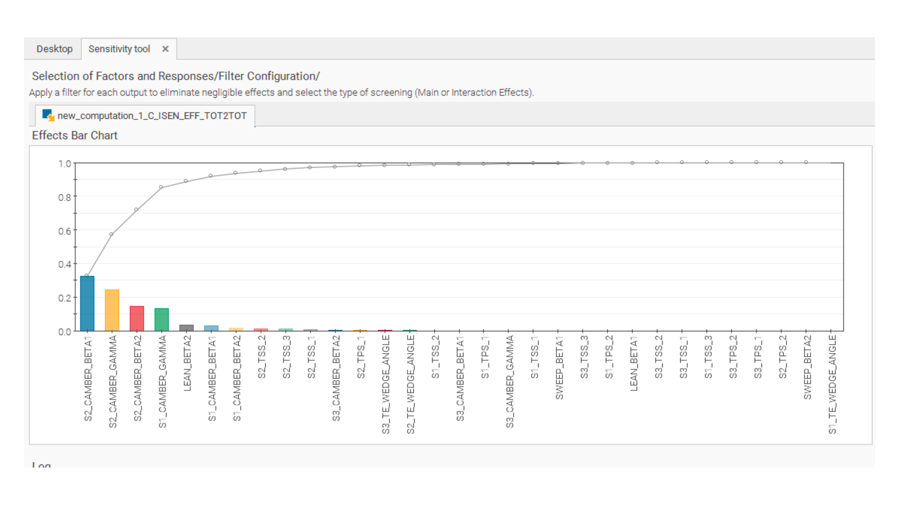

Problem
Most published turbomachinery design studies only explore a handful of blade geometries — around 50 samples on average — because each design point needs a full CFD simulation, and running thousands of them is computationally prohibitive. Our final year project asked whether a machine-learned surrogate model could remove that bottleneck: train an artificial neural network (ANN) on a modest CFD dataset, then use the trained network — not the CFD solver — to search a much larger design space and find a better blade. We used NASA Rotor 37, a well-studied transonic high-pressure compressor rotor with extensive published validation data, as the case study, and focused on optimizing its isentropic efficiency and pressure ratio.
Approach
The rotor's blade shape was parametrized using 31 geometric parameters — camber angles, stagger, sweep, lean and thickness-distribution control points at three span-wise sections (root, mid-span and tip) — out of 72 total available parameters, with the remaining 41 held fixed. Blade geometries were generated by randomly sampling this 31-parameter space using a mix of Latin Hypercube Sampling, random values at discrete levels, and full/fractional factorial designs, always choosing a prime number of discrete levels per batch to avoid resampling the same points twice. Each sampled geometry was meshed and solved in NUMECA FINE/Turbo as a steady-state RANS simulation (Spalart-Allmaras turbulence model, single blade passage with periodic boundary conditions, ~781,000 hexahedral cells), and the resulting isentropic efficiency and total pressure ratio were logged. In total we ran 850 CFD simulations to build the training dataset.
The overall workflow split into a standard CFD stage and a surrogate-modelling stage built on top of it:

An ANN (4 dense layers, 64→48→8→1 neurons, 5,633 trainable parameters) was trained in Keras/TensorFlow on the feature-scaled dataset (MaxAbsScaler, 95/5 train/test split) to predict isentropic efficiency from the 31 geometry parameters, using Adam and a mean-squared-error loss over 500 epochs. Once trained, I wrote a self-made gradient ascent routine that queried the trained network directly — numerically differentiating its predicted output with respect to each of the 31 inputs and stepping uphill — to search for the geometry that maximised predicted efficiency, entirely without running any further CFD. The resulting optimum was then scaled back to real geometric units and validated with one final CFD simulation.
Result
The CFD setup itself was validated first: for the baseline (nominal) Rotor 37 geometry, the simulation predicted an isentropic efficiency of 85.30% and a pressure ratio of 2.106, against the aircraft's published values of 85.5% and 2.0137 — close enough to trust the solver setup for the optimization study.
The trained ANN reached a test-set mean absolute percentage error of about 2.1% after 500 epochs, accurate enough to trust for the gradient-based search. Running the gradient ascent routine on the network and validating the result with one final CFD run gave a real, CFD-confirmed improvement over the baseline:
| Isentropic efficiency | Total pressure ratio | Mass flow | |
|---|---|---|---|
| Baseline (nominal) design | 85.30% | 2.106 | 20.190 kg/s |
| ANN-optimized design | 86.66% | 2.203 | 20.183 kg/s |
That is roughly a 1.4 percentage-point gain in isentropic efficiency and a noticeably higher pressure ratio, for essentially the same mass flow — found without running a single additional CFD case during the search itself, only the one confirmatory run at the end.

A sensitivity analysis on the trained model also gave a genuinely useful design insight that wasn't obvious going in: of the 31 geometric parameters, just four camber-related parameters — the mid-span and root section's camber angles and stagger — accounted for roughly 85–90% of the total effect on isentropic efficiency, while sweep, lean and thickness-distribution parameters barely moved the result at all.

Limitations
The ANN was trained on a single case study (Rotor 37) and a single pair of output metrics (isentropic efficiency, pressure ratio); it wasn't tested on a different rotor geometry, so how well the approach transfers to other blades is untested rather than proven. The self-made gradient ascent optimizer searches only the region the network was trained on and offers no guarantee of finding a true global optimum — it is only as reliable as the network's local gradient estimates, which is why the final design was re-validated with a real CFD run rather than trusted outright. The 850-run training dataset, while large by the standards of typical turbomachinery studies, still only sparsely samples a 31-dimensional design space, and the CFD itself used a single blade passage with periodic boundary conditions rather than the full 36-blade rotor, which simplifies (and slightly idealises) the real flow.